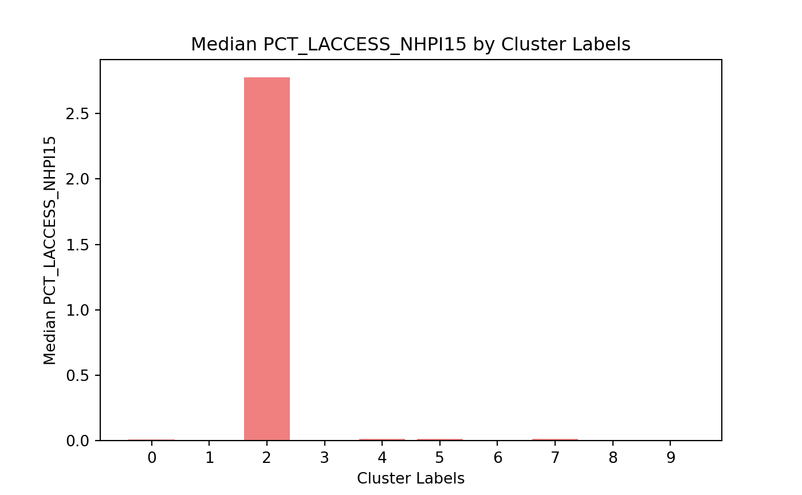

4 Results

Now we can look at the variables in the data to see what the different clusters look like.
# Count how many unique counties are in each Cluster Label
county_counts = data.groupby('Cluster Labels')['County'].nunique()
# Create a bar plot to visualize the counts of counties in each cluster
plt.figure(figsize=(10, 6))
plt.bar(county_counts.index, county_counts.values, color='skyblue')
plt.xticks(np.arange(0, 10), rotation=0) # Adjust as needed## ([<matplotlib.axis.XTick object at 0x000001BF93850E90>, <matplotlib.axis.XTick object at 0x000001BF93852C00>, <matplotlib.axis.XTick object at 0x000001BF969235F0>, <matplotlib.axis.XTick object at 0x000001BF938523C0>, <matplotlib.axis.XTick object at 0x000001BF9748E9F0>, <matplotlib.axis.XTick object at 0x000001BF9748F800>, <matplotlib.axis.XTick object at 0x000001BF9748D460>, <matplotlib.axis.XTick object at 0x000001BF9748F6B0>, <matplotlib.axis.XTick object at 0x000001BF90795D90>, <matplotlib.axis.XTick object at 0x000001BF938726C0>], [Text(0, 0, '0'), Text(1, 0, '1'), Text(2, 0, '2'), Text(3, 0, '3'), Text(4, 0, '4'), Text(5, 0, '5'), Text(6, 0, '6'), Text(7, 0, '7'), Text(8, 0, '8'), Text(9, 0, '9')])# Title and labels
plt.title('Count of Counties by Cluster Groups')
plt.xlabel('Cluster Group Labels')
plt.ylabel('Number of Unique Counties')
# Show the plot
plt.show()Here we see a raw count for how many counties are in each cluster group. The majority of the counties are in cluster 6. This can be expected due to the counties being tightly packed when we did our cluster analysis.
#These two counties have seen huge increases in low access to stores. Since this
#would be a place recommended for N1 to deploy its resources, I subset the
#daa to exclude them from the data. This will even out the skewness in a
#couple of the bar charts making it easier on the eyes.
data = data[~((data['State'] == 'IL') & (data['County'] == 'Putnam'))]
data = data[~((data['State'] == 'TX') & (data['County'] == 'Stonewall'))]
float_columns = data.select_dtypes(include=['float64']).columns
# Loop through each 'float64' column in 'data'
for column in float_columns:
plt.figure(figsize=(10, 6))
# For each cluster, calculate the median of the variable
cluster_medians = data.groupby('Cluster Labels')[column].median()
# Create a bar plot for the column, grouped by 'Cluster Labels'
plt.bar(cluster_medians.index, cluster_medians.values, color='lightcoral')
plt.xticks(np.arange(0, 10), rotation=0) # Adjust as needed
# Title and labels
plt.title(f'Median {column} by Cluster Labels')
plt.xlabel('Cluster Labels')
plt.ylabel(f'Median {column}')
# Show the plot
plt.show()

From these graphs, there are a few key insights that should be recognized: 1. In the PCH_LACCESS_POP_10_15 graph, there is a huge increase in the percentage of the population that have low access to stores in the second group of counties. After some digging, there are 5 counties in this group. 4 of them are in Hawaii and the other one is in Alaska. If N1 has the resources, these 5 counties would be great candidates for N1 to help with food access challenges.
The second insight from this graph is the increase in group 8. This is a smaller group of counties that are seeing an increase in the percentage of the population that is struggling to get food access. These counties are also ideal candidates for N1 to utilize its resources to aid in people getting better access to food.
Utilizing the graph that shows the distribution of the Black population across the groups, we see that the majority of this group is within the counties in group 8. If N1 uses it resources to help these communities with increasing access to food, they should expect the majority of these populations to be Black. This knowledge will help N1 tailor their programs to these communities.
- In the PCH_LACCESS_HHNV_10_15 graph, we see group 9 has the biggest percentage of people that have low access to food and don’t have access to a car. This is vital information if N1 decides to deploy its resources to these communities. When creating a program to increase the access to food, N1 should consider having a option where they help deliver food to households or setting up food pantries within walking distances in these communities to give them better access to food.
Looking into the White, Hispanic, and Multiracial graphs, we see see these ethnic groups strongly represent group 9. If N1 decides to deploy resources to help these communities, they should expect these populations to be White, Hispanic, or Multiracial.
Lastly, I am going to recreate the graphs I mentioned above to get them looking nicer and presentation quality.
PCH_LACESS_HHNV_10_15 Plot
# Plot for PCH_LACCESS_HHNV_10_15
plt.figure(figsize=(10, 6))
# Calculate the median for each cluster
cluster_medians = data.groupby('Cluster Labels')['PCH_LACCESS_HHNV_10_15'].median()
# Define color list: grey for bars 1-8, sky blue for bar 9
colors = ['grey' if i != 9 else 'skyblue' for i in cluster_medians.index]
# Create the bar plot with the color list
plt.bar(cluster_medians.index, cluster_medians.values, color=colors)
# Customize the x-ticks and rotation
plt.xticks(np.arange(0, 10), rotation=0) # Adjust as needed## ([<matplotlib.axis.XTick object at 0x000001BFC6EB0EF0>, <matplotlib.axis.XTick object at 0x000001BF97BE3830>, <matplotlib.axis.XTick object at 0x000001BFC6F62750>, <matplotlib.axis.XTick object at 0x000001BFC6F61C40>, <matplotlib.axis.XTick object at 0x000001BFC6F61B80>, <matplotlib.axis.XTick object at 0x000001BFC6F62DB0>, <matplotlib.axis.XTick object at 0x000001BFC6F63D10>, <matplotlib.axis.XTick object at 0x000001BFC6F7C7A0>, <matplotlib.axis.XTick object at 0x000001BFC6F63C50>, <matplotlib.axis.XTick object at 0x000001BF97C16B40>], [Text(0, 0, '0'), Text(1, 0, '1'), Text(2, 0, '2'), Text(3, 0, '3'), Text(4, 0, '4'), Text(5, 0, '5'), Text(6, 0, '6'), Text(7, 0, '7'), Text(8, 0, '8'), Text(9, 0, '9')])# Title and labels
plt.title('Median 2010 to 2015 People with Low Access and No Car')
plt.xlabel('Group Label')
plt.ylabel('% Change')
# Show the plot
plt.show()
PCH_LACCESS_POP_10_15 Plot
# Plot for PCH_LACESS_HHNV_10_15
plt.figure(figsize=(10, 6))
# Calculate the median for each cluster
cluster_medians = data.groupby('Cluster Labels')['PCH_LACCESS_POP_10_15'].median()
# Define color list: grey for bars 1-8, sky blue for bar 9
colors = ['grey' if i != 8 else 'skyblue' for i in cluster_medians.index]
# Create the bar plot with the color list
plt.bar(cluster_medians.index, cluster_medians.values, color=colors)
# Add a horizontal black line at y=0
plt.axhline(y=0, color='black', linewidth=2)
# Customize the x-ticks and rotation
plt.xticks(np.arange(0, 10), rotation=0) # Adjust as needed## ([<matplotlib.axis.XTick object at 0x000001BF9265BA70>, <matplotlib.axis.XTick object at 0x000001BF9265A0F0>, <matplotlib.axis.XTick object at 0x000001BF9269DDC0>, <matplotlib.axis.XTick object at 0x000001BF90BCCE00>, <matplotlib.axis.XTick object at 0x000001BF90BDCB30>, <matplotlib.axis.XTick object at 0x000001BF90BDD490>, <matplotlib.axis.XTick object at 0x000001BF90BDCEC0>, <matplotlib.axis.XTick object at 0x000001BF97B88AD0>, <matplotlib.axis.XTick object at 0x000001BFB3605B20>, <matplotlib.axis.XTick object at 0x000001BFB36053D0>], [Text(0, 0, '0'), Text(1, 0, '1'), Text(2, 0, '2'), Text(3, 0, '3'), Text(4, 0, '4'), Text(5, 0, '5'), Text(6, 0, '6'), Text(7, 0, '7'), Text(8, 0, '8'), Text(9, 0, '9')])# Title and labels
plt.title('Median 2010 to 2015 Population with Low Access to Stores')
plt.xlabel('Group Label')
plt.ylabel('% Change')
# Show the plot
plt.show()
I am going to save the data so I can upload it into Tableau.